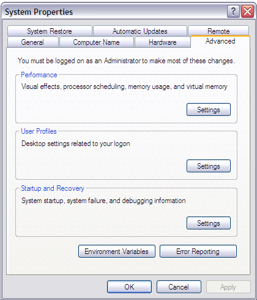
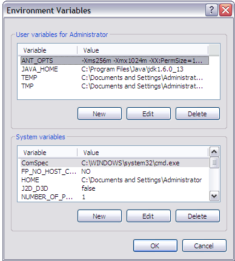
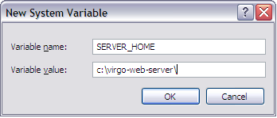
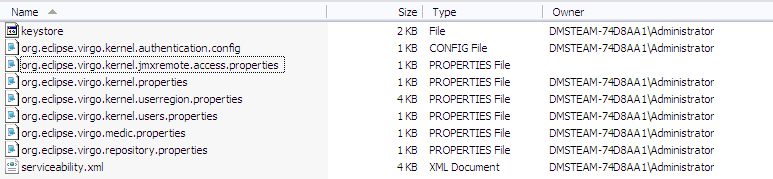
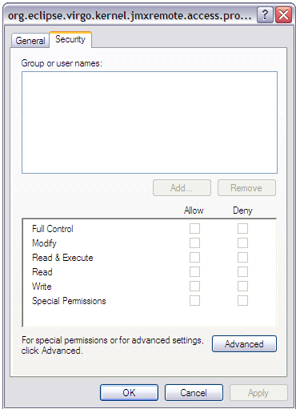
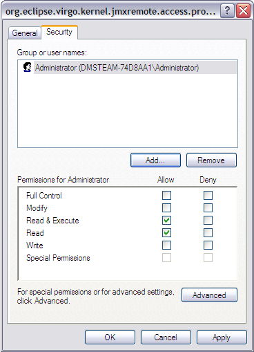

Virgo Server for Apache Tomcat uses the JAVA_HOME environment variable to locate the java
executable. Configure this environment variable to point to the home directory of the Java 6 installation on your computer.
As a convenience it is recommended that you create an environment variable that points
to the Virgo Server for Apache Tomcat installation directory. Note that the Virgo Server for Apache Tomcat does not require that
such an environment variable has been set. This variable may have any name of your
choosing. The Virgo Server for Apache Tomcat’s documentation assumes that the variable is named
SERVER_HOME.
Edit the .profile file in your home directory to
add the SERVER_HOME and JAVA_HOME environment variables. For
example, if you installed into /opt:
export SERVER_HOME=/opt/virgo-web-server-3.5.0/ export JAVA_HOME=/user/java/jdk1.6.0_17 export PATH=$JAVA_HOME/bin:$PATH
To verify the setting of JAVA_HOME, issue the command $JAVA_HOME/bin/java -version from a new terminal window
and ensure that the command completes successfully and reports
a Java version 1.6.x (denoting Java 6) or greater.
This section shows how to add SERVER_HOME as a system variable on Windows. Follow the same procedure to add or update the JAVA_HOME environment variable.
From the Start menu, open the Control Panel and double-click on ‘System’.

Click the ‘Advanced’ tab and select ‘Environment Variables’. Next, click the ‘New’ button in the ‘System Variables’ section.

This will display the ‘New System Variable’ window. Enter
SERVER_HOME as the ‘Variable name’ and
the installation directory as the ‘Variable value’. Click OK.

To verify the setting of JAVA_HOME, issue the command "%JAVA_HOME%"\bin\java -version from
a new command prompt and ensure that the command completes successfully and reports
a Java version 1.6.x (denoting Java 6) or greater.
When starting Virgo Server for Apache Tomcat on some variants of Windows you might encounter a problem with file permissions. The error looks like this.
WARNING: jmxPermissions.vbs did not update the permissions of C:\virgo\configuration\org.eclipse.virgo.kernel.jmxremote.access.properties. Check the file has the correct permissions.
If VTS starts correctly (see Starting and Stopping Virgo Server for Apache Tomcat) you can skip this section and carry on. However to secure your installation you have to set correct permissions. To do so, go to the ‘configuration’ directory of the installation in Windows Explorer.

Right click on the ‘org.eclipse.virgo.kernel.jmxremote.access.properties’ file and view its properties, then select the ‘Security’ tab. Remove all groups and users from the list and select ‘Apply’.

Within the security page select the ‘Advanced’ options. On the ‘Owner’ tab, choose the owner that you are trying to run the VTS as and select ‘Apply’.

Once this is done select ‘OK’ to return to the ‘Security’ tab and now add the owner to the list of groups and users that have permission to access the file.

Once all these steps are complete you can proceed to start the VTS.
C:\dev\virgo-web-server-3.5.0>bin\startup.bat [2009-12-08 13:09:09.545] startup-tracker <KE0001I> Kernel starting.